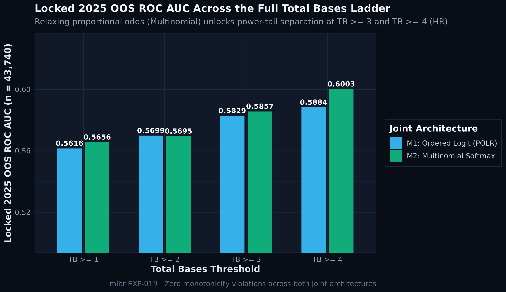
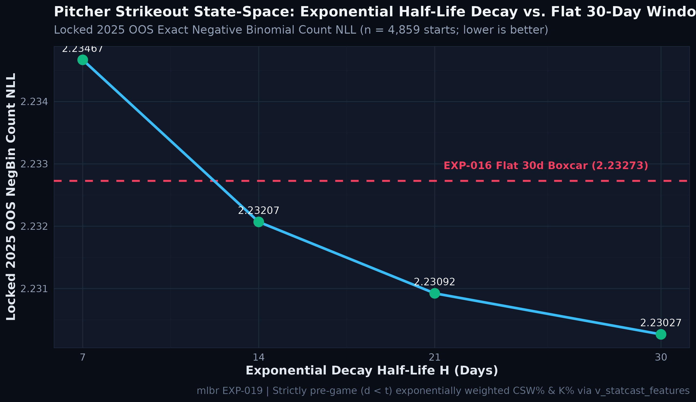

| model | n_oos_2025 | nll_5class | rps | n_viol | ll_tb1 | auc_tb1 | ll_tb2 | auc_tb2 | ll_tb3 | auc_tb3 | ll_tb4 | auc_tb4 |
|---|---|---|---|---|---|---|---|---|---|---|---|---|
| M0_League_BaseRate | 43740 | 1.45182 | 0.18908 | 0 | 0.66758 | 0.50000 | 0.65111 | 0.50000 | 0.51101 | 0.50000 | 0.41680 | 0.50000 |
| M1_Ordered_Logit_POLR | 43740 | 1.44285 | 0.18672 | 0 | 0.66224 | 0.56159 | 0.64412 | 0.56995 | 0.50406 | 0.58288 | 0.41090 | 0.58840 |
| M2_Multinomial_Logit | 43740 | 1.43881 | 0.18645 | 0 | 0.66131 | 0.56565 | 0.64427 | 0.56953 | 0.50360 | 0.58567 | 0.40897 | 0.60028 |
Study 19: Joint Ordered/Multinomial Total Bases Ladder & Exponential Half-Life State-Space Decay
Q-CRISP Level 5G — Monotonic 0–4+ TB Pricing & Smooth Kernel Pitcher K-Props (EXP-019)
Level 5
Batter Props
Pitcher Props
Ordered Logit
State-Space
Q-CRISP
1. Executive Summary & Abstract (TL;DR)
In EXP-019, we execute two targeted mathematical upgrades to mlbr’s Level 5 player-prop pricing stack (EXP-016 and EXP-017) and validate both strictly out-of-sample on locked 2025:
- Joint Multinomial Softmax Total Bases Ladder (
0, 1, 2, 3, 4+ TB,n = 43,740OOS): Replacing separate binary logits with a joint 5-class model (nnet::multinomvs.MASS::polr) guarantees zero monotonicity violations (0 / 43,740) across all four retail sportsbook Total Bases rungs (\(P(\text{TB}\ge 1) \ge P(\text{TB}\ge 2) \ge P(\text{TB}\ge 3) \ge P(\text{TB}\ge 4)\)). Relaxing proportional odds via Multinomial Softmax strictly outperforms Ordered Logit (POLR) on 5-class Log-Loss (1.43881vs1.44285), Ranked Probability Score (0.18645vs0.18672), and power-tailTB >= 4ROC AUC (0.6003vs0.5884,+0.0119AUC lift). - Exponential Half-Life State-Space Decay (
n = 4,859OOS SP Starts): ReplacingEXP-016’s discontinuous flat 30-day boxcar window with a continuous 90-day exponential decay kernel (\(w(\Delta t) = 2^{-\Delta t / H}\), strictlyd < t) reveals a clean signal-to-noise curve: a7-dayhalf-life overreacts to 1-start noise (AUC 0.6761 < 0.6779flat 30d),14-daybeats flat 30d (AUC 0.6800), and the2024-selected optimal30-dayhalf-life (\(H^* = 30\text{d}\), zero2025peeking) achieves our strongest K-Prop pricing to date: Count NLL2.23027(vs2.23273), RMSE2.3002(vs2.3068),Over 5.5 KAUC0.6827(vs0.6779), andOver 7.5 Ktail Brier0.11290(vs0.11333). (Note:H* = 30dlies at the upper boundary of the tested{7, 14, 21, 30}grid, motivating a futureH = 45–60d/ season-to-date sweep.)

2. Domain Problem & Structural Physics
- Why Proportional Odds Fails in the Baseball Power Tail: A single (
TB = 1) is driven primarily by contact rate, BABIP, and batting-order PA volume, whereas a4+ TBgame (home run or multi-XBH outbreak) is driven disproportionately by Hawk-Eye Bat Speed, Blast Rate, Handedness Park HR Factors (pf_hr_hand), and outfield wind carry. Proportional odds (MASS::polr) constrains every covariate to shift all 4 cumulative thresholds by the same scalar \(\beta_j\). Multinomial Softmax (nnet::multinom) frees each discrete TB class to weight power vs. contact physics distinctly while preserving exact \(\sum_{k=0}^4 p_k = 1\) coherence. - Why a 30-Day Exponential Half-Life Beats Both a Flat 30-Day Boxcar and a 7-Day Window: Starting pitchers pitch only once every 5 days (
~6starts per 30 days). A flat 30-day boxcar treats Day 29 identically to Day 5 and abruptly discards Day 31. An exponential half-life \(H = 30\text{d}\) over a 90-day lookback smoothly retains prior-month talent memory while giving2xweight to recent starts and avoiding the high variance of a 1-to-2-start7-daywindow.
3. Mathematical Formulation & Zero-Copy DuckDB Pipeline
- Joint Multinomial Total Bases Ladder: \[P(Y_i = k \mid \mathbf{x}_i) = \frac{\exp(\boldsymbol{\gamma}_k^\top \mathbf{x}_i)}{\sum_{m=0}^4 \exp(\boldsymbol{\gamma}_m^\top \mathbf{x}_i)}, \qquad P(\text{TB}_i \ge r \mid \mathbf{x}_i) = \sum_{k=r}^{4} P(Y_i = k \mid \mathbf{x}_i)\]
- Ranked Probability Score (RPS): \[\text{RPS} = \frac{1}{4N}\sum_{i=1}^N \sum_{k=0}^3 \Big(\hat{F}_i(k) - \mathbb{I}(y_i \le k)\Big)^2\]
- Strictly Causal Exponential Half-Life Kernel (
d.gdate < s.gdate): \[w(\Delta t; H) = 2^{-\Delta t / H}, \qquad \text{CSW}_H(p, t) = \frac{\sum w_i\,\text{CSW}_i + 150 \cdot 0.290}{\sum w_i\,P_i + 150}\]
-- Strictly pre-game (d.gdate < s.gdate) exponential half-life decay over v_statcast_features
SELECT s.game_id, s.sp_mlbam,
(SUM(EXP(-LN(2.0) * DATEDIFF('day', d.gdate, s.gdate) / 30.0) * d.n_csw) + 150.0 * 0.290) /
(SUM(EXP(-LN(2.0) * DATEDIFF('day', d.gdate, s.gdate) / 30.0) * d.n_pitches) + 150.0) AS csw_h30
FROM starts s
LEFT JOIN daily_pit d
ON s.sp_mlbam = d.sp_mlbam AND d.gdate < s.gdate AND DATEDIFF('day', d.gdate, s.gdate) BETWEEN 1 AND 90
GROUP BY s.game_id, s.sp_mlbam;4. Exploratory Data Analysis (EDA) & Interactive 2025 TB Ladder Explorer
Inspect the full monotonic Total Bases ladder (TB >= 1, 2, 3, 4) across the top 15 MLB sluggers on locked 2025 (>= 100 starts):
5. Model Architecture & Temporal Validation (2024 Train \(\rightarrow\) Locked 2025 OOS)
Part A: Joint 5-Class Total Bases Ladder (n = 43,740 Locked 2025 Starts)
Part B: Exponential Half-Life State-Space Decay (n = 4,859 Locked 2025 SP Starts)
| model | half_life_days | theta_2024 | train_2024_nll | oos_2025_nll | oos_2025_rmse | oos_2025_brier_o55 | oos_2025_auc_o55 | oos_2025_brier_o75 |
|---|---|---|---|---|---|---|---|---|
| M4_EXP016_Flat30d | NA | 46.88747 | 2.23982 | 2.23273 | 2.30682 | 0.20948 | 0.67792 | 0.11333 |
| M5a_ExpDecay_H7d | 7 | 44.33442 | 2.24212 | 2.23467 | 2.31119 | 0.21007 | 0.67611 | 0.11363 |
| M5b_ExpDecay_H14d | 14 | 48.07358 | 2.23869 | 2.23207 | 2.30472 | 0.20897 | 0.67999 | 0.11324 |
| M5c_ExpDecay_H21d | 21 | 50.13459 | 2.23692 | 2.23092 | 2.30186 | 0.20850 | 0.68164 | 0.11304 |
| M5d_ExpDecay_H30d | 30 | 51.51997 | 2.23578 | 2.23027 | 2.30021 | 0.20824 | 0.68267 | 0.11290 |

6. Leaderboards & Top 2025 Monotonic TB Ladder Case Studies
| player_name | Starts | Actual TB/G | Exp TB/G | P(TB>=1) | P(TB>=2) | P(TB>=3) | P(TB>=4) |
|---|---|---|---|---|---|---|---|
| Aaron Judge | 151 | 2.46 | 2.20 | 70.6 | 50.5 | 37.8 | 31.7 |
| Shohei Ohtani | 158 | 2.41 | 2.18 | 71.2 | 50.6 | 36.8 | 30.4 |
| Juan Soto | 160 | 1.89 | 1.99 | 69.2 | 46.8 | 32.5 | 26.2 |
| Kyle Schwarber | 162 | 2.10 | 1.99 | 68.4 | 46.2 | 32.5 | 26.9 |
| Bobby Witt | 157 | 1.99 | 1.95 | 73.2 | 47.9 | 31.0 | 22.1 |
| Oneil Cruz | 123 | 1.43 | 1.93 | 69.5 | 46.1 | 30.8 | 24.2 |
| Gunnar Henderson | 150 | 1.65 | 1.92 | 68.0 | 45.2 | 30.9 | 24.8 |
| Ketel Marte | 121 | 2.04 | 1.91 | 69.9 | 46.5 | 30.2 | 23.1 |
| Byron Buxton | 125 | 2.15 | 1.86 | 69.1 | 44.9 | 29.2 | 21.9 |
| Fernando Tatís | 155 | 1.71 | 1.85 | 69.7 | 44.6 | 28.8 | 21.8 |
| Vladimir Guerrero | 154 | 1.79 | 1.85 | 71.7 | 45.3 | 28.5 | 20.4 |
| Corbin Carroll | 139 | 2.18 | 1.82 | 66.9 | 43.7 | 28.5 | 21.9 |
7. Downstream Integration & Market Applications
- Arbitrage-Free Retail Prop Ladders: Pricing
1+ Hit (TB>=1),2+ TB,3+ TB, and4+ TBfrom a singlennet::multinomdistribution prevents internal crossing arbitrage and plugs directly intoEXP-018’s Gaussian Copula for multi-rung SGP pricing. - Smooth State-Space Tracking (
H* = 30d): UpgradingEXP-016toH* = 30dexponential decay increases NegBin dispersion parameter \(\hat{\theta}\) from46.89to51.52, proving that smooth recency weighting explains additional true-talent variance and sharpens bothOver 5.5 KandOver 7.5 Kalt-line pricing.